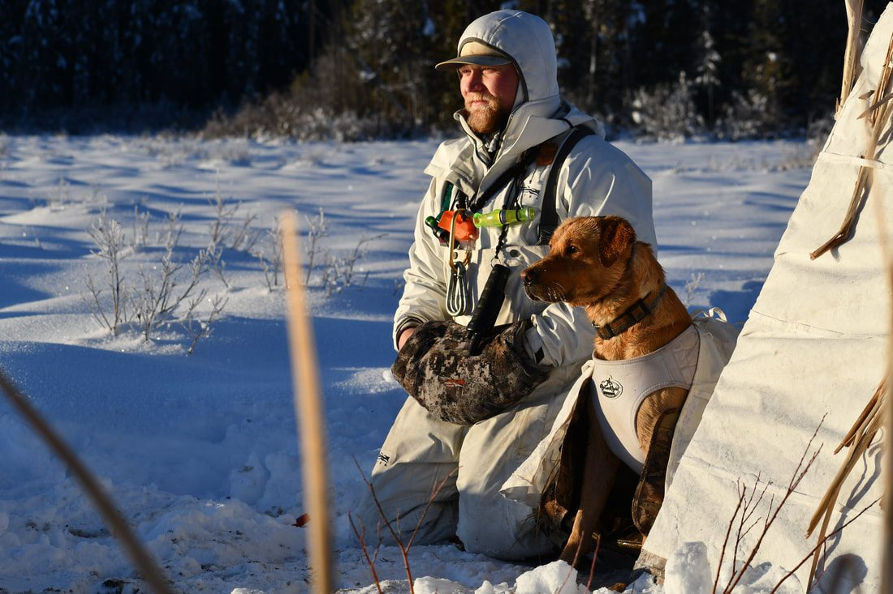
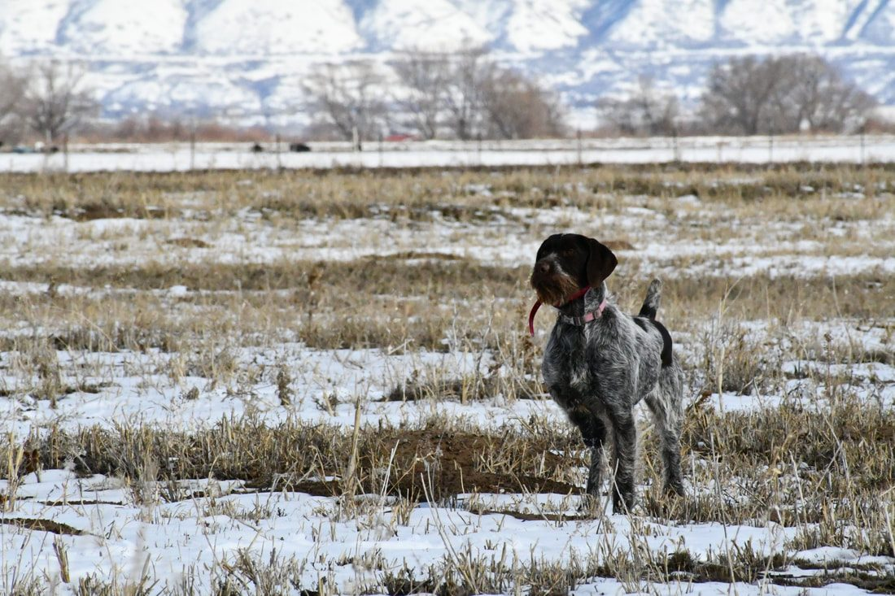
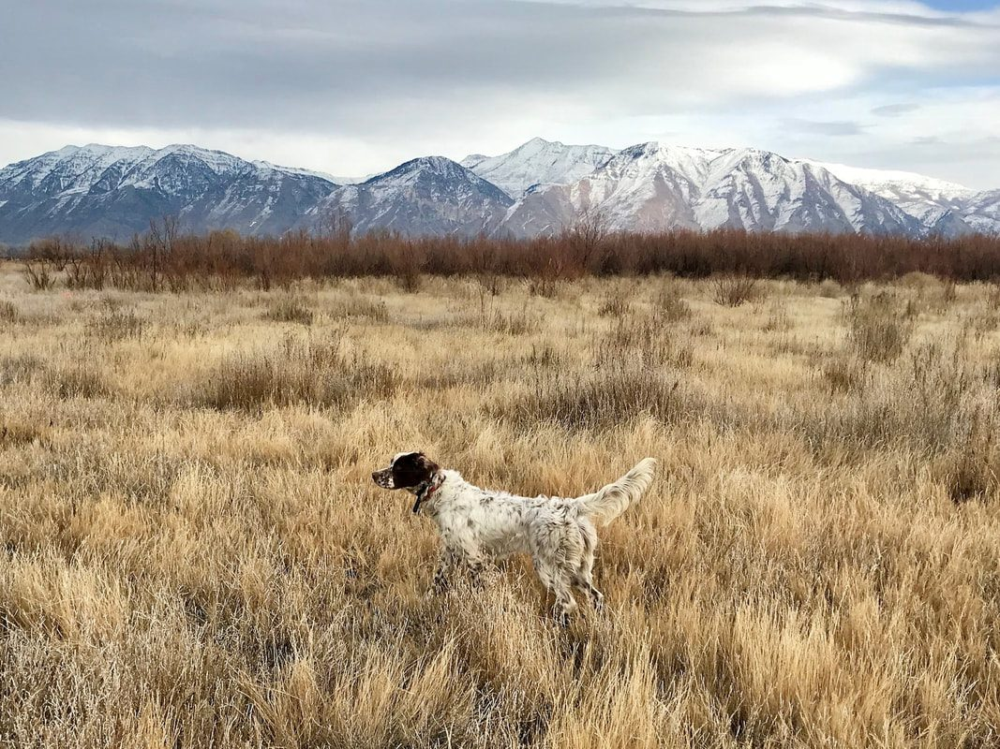
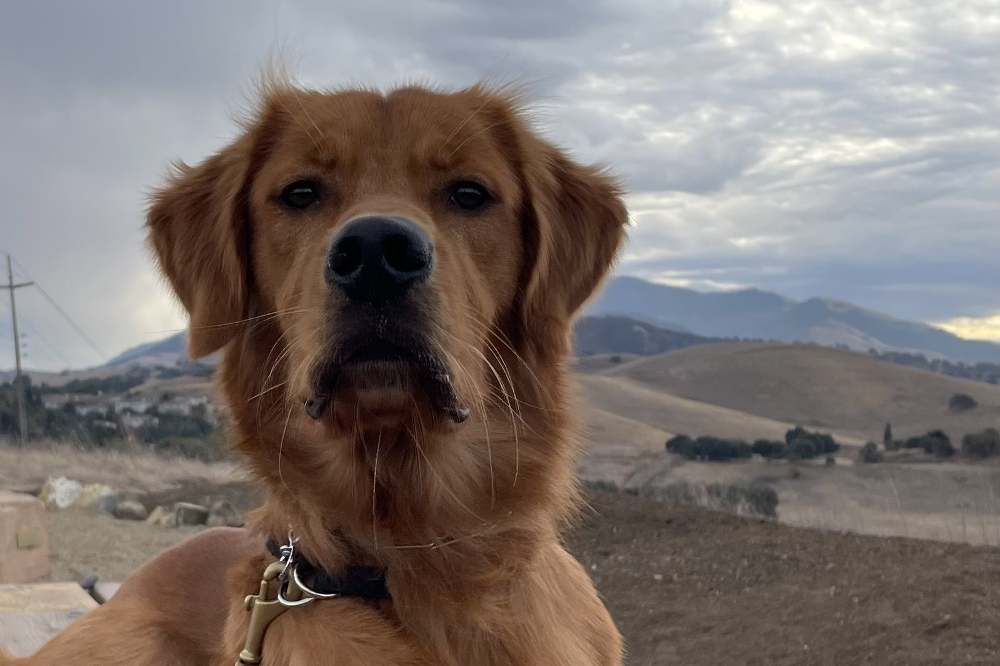

There is no single timeline for fixing a gun-shy dog.
A dog with average to above-average prey drive that is worked consistently can sometimes make very good progress in about a month.
A dog with lower drive, a severe negative history with gunfire, or a deeply established fear can take several months.
The most important thing is not the calendar. It is the dog’s behavior.
Whether a gun-shy dog can make progress at all is a different question. This page is about how long that work usually takes. The method itself is in how to fix a gun-shy dog.
Why some dogs progress faster than others
Gun shyness does not look exactly the same in every dog.
One dog may have had one bad experience with a gunshot and still have strong bird drive and retrieving desire.
Another dog may have been repeatedly exposed to gunfire that frightened it.
Those dogs may need very different amounts of time.
Some of the biggest factors I look at are:
- How severe the dog’s reaction to gunfire is.
- How long the dog has been showing gun-shy behavior.
- Whether the dog still has strong bird drive.
- Whether the dog enjoys retrieving.
- Whether the dog stays active and engaged around positive activities.
- How quickly the dog’s demeanor changes when gunfire is introduced.
- How consistently the dog can be worked.
- Whether the owner keeps adding negative gunfire experiences between training sessions.
A dog with strong drive gives us something positive to build from.
A dog with very low drive can be more difficult because the positive activity may not be strong enough to compete with the fear of the gun.
About a month is possible for some dogs
In our training program, if a dog has average to above-average prey drive and we are working it consistently Monday through Friday, we can sometimes get the dog going pretty well around gunfire in about a month’s time.
That does not mean every dog will be fixed in 30 days.
It means that with the right dog, strong drive, frequent repetition, and a careful progression, we may see substantial improvement in that timeframe.
We are also able to work dogs consistently. That matters.
An owner working once every couple of weeks may not see the same progression as a dog being worked several days each week.
Severe gun shyness can take months
Dogs with more severe gun issues can take much longer.
If the dog has already learned that loud noises or gunfire mean something negative, we may need to spend a lot more time changing that association before we can successfully work the dog around live gunfire again.
Some dogs will progress well at first and then hit a wall.
For example, I have worked with dogs that were comfortable with a shooter farther away, but once the gun reached around 30 or 40 yards, the dog’s demeanor changed.
The dog might:
- Stop retrieving.
- Stop hunting.
- Lose interest in the bird.
- Come back toward the handler.
- Slow down.
- Become more focused on the gun than the activity.
Those subtle behavior changes are the signal. I cover them in Signs Your Dog Is Becoming Gun Shy.
At that point, pushing the gun closer just because we have already spent several weeks training is usually not the answer.
We need to back up.
That can add time to the process, but moving more slowly can prevent an even larger setback.

The calendar does not determine progress
One of the biggest mistakes an owner can make is deciding the dog should be ready because a certain amount of time has passed.
You cannot say: “It has been two weeks, so now the gun needs to be closer.”
Or: “Hunting season starts next month, so we need to move faster.”
The dog’s brain does not follow that schedule.
I look at the dog’s demeanor.
If the dog is:
- Happy.
- Retrieving.
- Chasing.
- Hunting.
- Interested in birds.
- Moving normally.
- Acting like itself.
then we may be able to progress.
If that behavior changes, we slow down.
What does “making progress” actually look like?
Progress is not simply a dog standing near gunfire without running away.
A dog can stay next to the owner and still have a gun issue.
I want to see the dog continue doing what it normally enjoys.
For a hunting dog, that may mean:
- Ranging out into the field.
- Searching for birds.
- Retrieving normally.
- Maintaining strong bird interest.
- Staying energetic.
- Keeping the same general attitude before and after the shot.
If the dog hears the shot and continues behaving the same way, that is a much better sign than simply staying physically near the handler.

Strong prey drive can help the process
When possible, I like to build the dog’s confidence around something it already loves.
For many hunting dogs, that is birds or retrieving.
If the dog becomes highly excited about a bird, we can use that positive experience while gradually introducing gunfire at a distance.
The bird should be more important to the dog than the gun.
If the dog stays focused on the bird and maintains the same energy after the shot, we can slowly progress.
If the gun becomes more important than the bird, we have moved too fast.
Dogs with strong bird or retrieving drive can sometimes progress more quickly because that positive motivation gives us something powerful to work with.
- 1Positive activity
- 2Distant gunfire
- 3Watch demeanor
- 4Move closer only if the dog stays happy

What if live gunfire is slowing everything down?
Some dogs are too uncomfortable with live gunfire to continue progressing in the field.
That is one of the situations where I may back up and use Gunshy Fix.
Gunshy Fix combines calming music with progressively introduced gunfire. Instead of continuing to push the dog against a live-gun threshold, we can work on the sound in a controlled setting.
The dog starts with the first lesson and stays there until its demeanor remains completely normal. Then it progresses to the next lesson. If the dog’s behavior changes, we go back.
That process may take time, but the goal is not speed. The goal is to help the dog become comfortable enough with the sound that we can eventually return to birds and live field work.
How long should a dog stay on each Gunshy Fix lesson?
There is no fixed number of plays or days.
Start with the first lesson at an average, comfortable volume. Then watch the dog.
The dog should be able to:
- Eat normally.
- Play.
- Retrieve.
- Relax.
- Move around the house.
- Interact normally.
- Maintain the same personality and energy.
Stay on that lesson until the dog is fully comfortable. Then move to the next one.
If the dog’s demeanor changes, go back to the previous lesson. Stay there until the dog is comfortable again. Only then should you attempt to move forward.
Consistency matters
A dog worked consistently can often make better progress than one that experiences gunfire only occasionally.
That does not mean increasing the intensity every day. It means giving the dog repeated positive, controlled experiences.
If a dog is improving, I want to keep layering those positive experiences into its brain. That consistency matters both during rehabilitation and afterward.
A setback does not mean you have to start over
Progress with gun shyness is not always perfectly linear.
A dog may do well for several sessions and then show concern when the gun gets closer or the situation changes.
That does not necessarily mean all of the previous work has been lost. It means the dog is telling you that the current level is too much.
Back up to the point where the dog was comfortable. Rebuild confidence there. Then try progressing again when the dog’s behavior tells you it is ready.
Can a gun-shy dog relapse after it improves?
Yes.
That is one reason I do not consider the job finished the first time a dog tolerates close gunfire.
If a dog has successfully worked through gun issues, I recommend continuing positive exposure.
Do not work the dog through gunfire, put the gun away for a long period of time, and then suddenly expect the dog to handle a full hunting situation with shots right over it.
Continue taking the dog out. Continue creating positive gunfire experiences. Keep the dog working around birds, retrieving, and hunting.
We are trying to make the positive relationship with gunfire more established over time.
Don’t let hunting season set the timeline
Hunters often get into trouble because they have a deadline.
They have a trip planned. Opening day is coming. Friends are going hunting. They want the dog ready.
That pressure can cause people to move faster than the dog is ready for. If a dog has gun issues, rushing because hunting season is approaching can turn a month of progress into another major setback.
The dog needs to determine the pace. Not the calendar.
When is it time to get professional help?
Some dogs can make good progress with controlled at-home work. But live gunfire training can require resources many owners do not have.
You may need:
- Birds.
- Safe training property.
- A legal place to use firearms.
- Someone working the dog.
- Another person handling the gun at a distance.
- Enough room to gradually change that distance.
- Experience reading subtle changes in the dog’s demeanor.
If a dog has severe gun issues or keeps reaching a threshold you cannot get past, professional help may make sense. That is covered in When a Gun-Shy Dog Needs Professional Training.
I often recommend getting the dog comfortable with the Gunshy Fix lessons first, then transitioning to professional field work if needed.
So, how long will your dog take?
There is no honest way to give an exact answer without seeing the dog and watching how it responds.
A dog with good drive and consistent training may make strong progress in around a month.
A dog with severe gun shyness may take several months.
Some dogs may need ongoing management and professional help.
And I do not guarantee that every dog can be completely cured.
The best thing you can do is stop measuring progress by days and start measuring it by the dog’s demeanor.
If the dog stays happy, engaged, and confident, you can gradually move forward.
If the dog changes, slow down and back up.
That is the timeline that matters.
If you are in the first 24 hours after a bad shot, start with My Dog Is Scared of Gunshots — What Should I Do?
Start at the dog’s pace
Gunshy Fix was created as a controlled way to begin working on gunfire at home.
The lessons gradually introduce gunfire alongside calming music so you can progress according to your dog’s comfort rather than a fixed schedule.
For dogs that need more help afterward, the program can also be used as a first step before returning to birds and live field training.